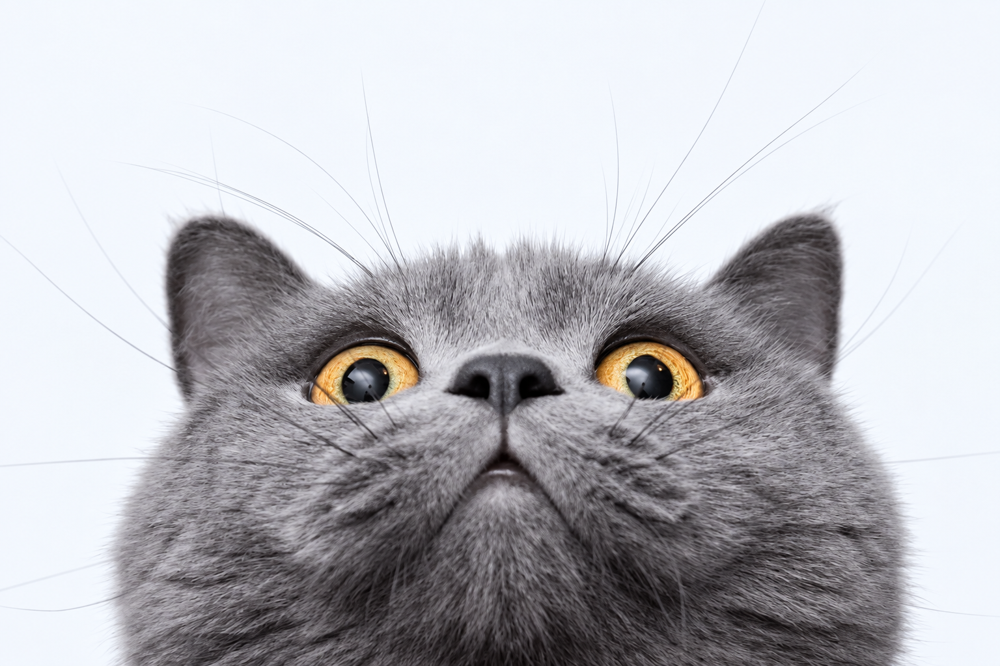
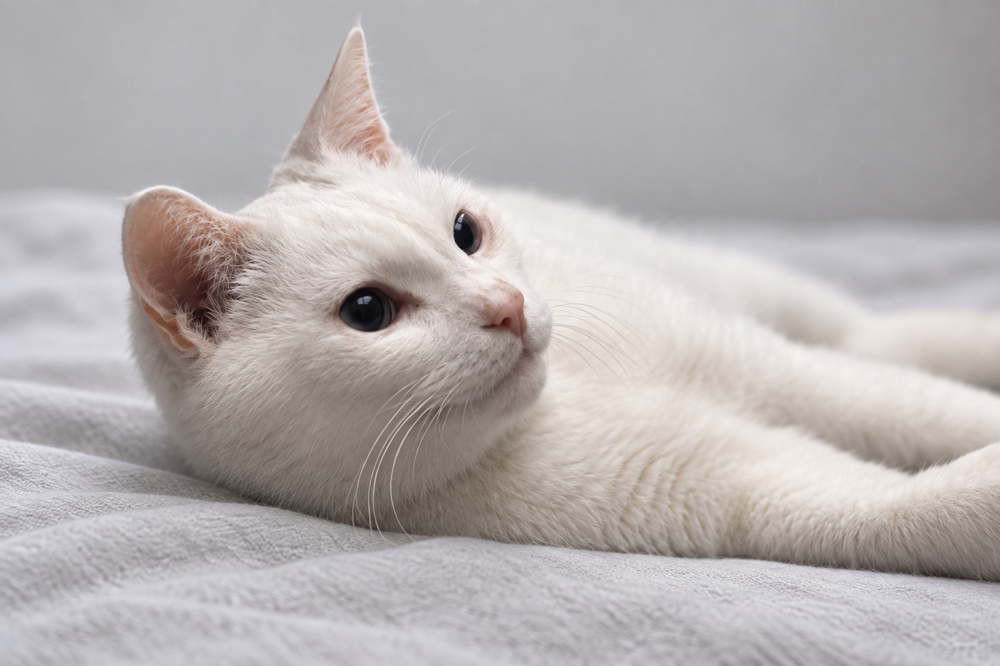
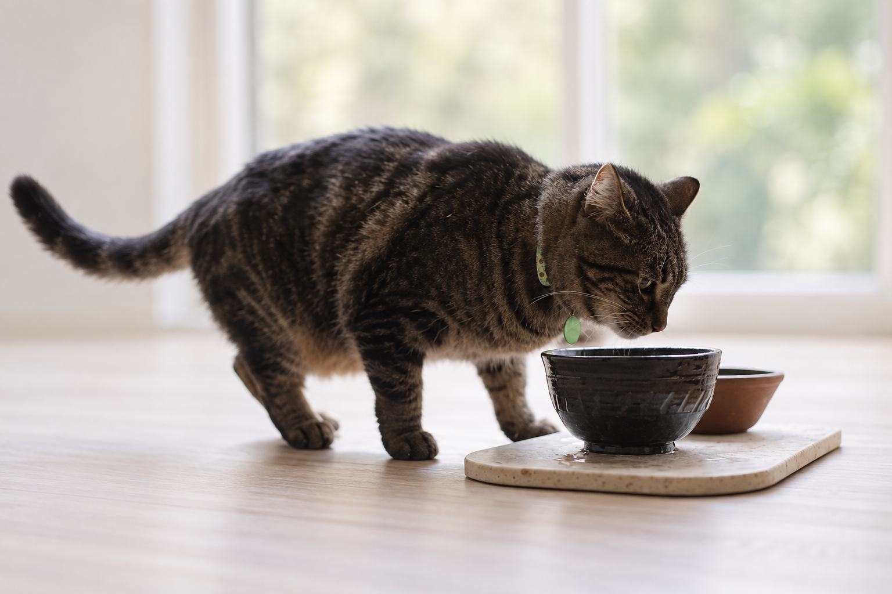
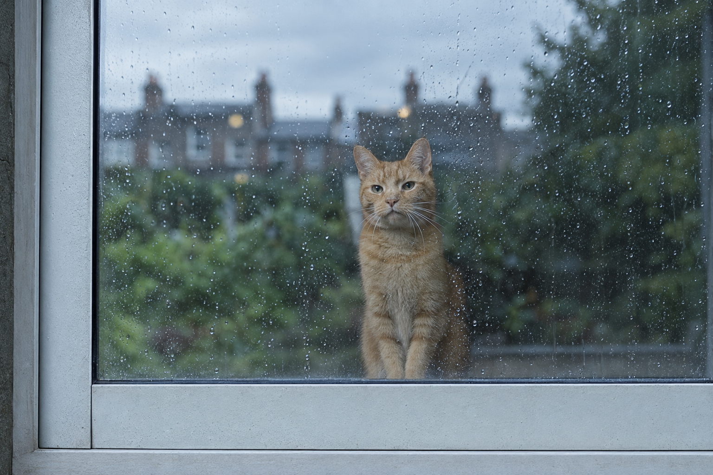
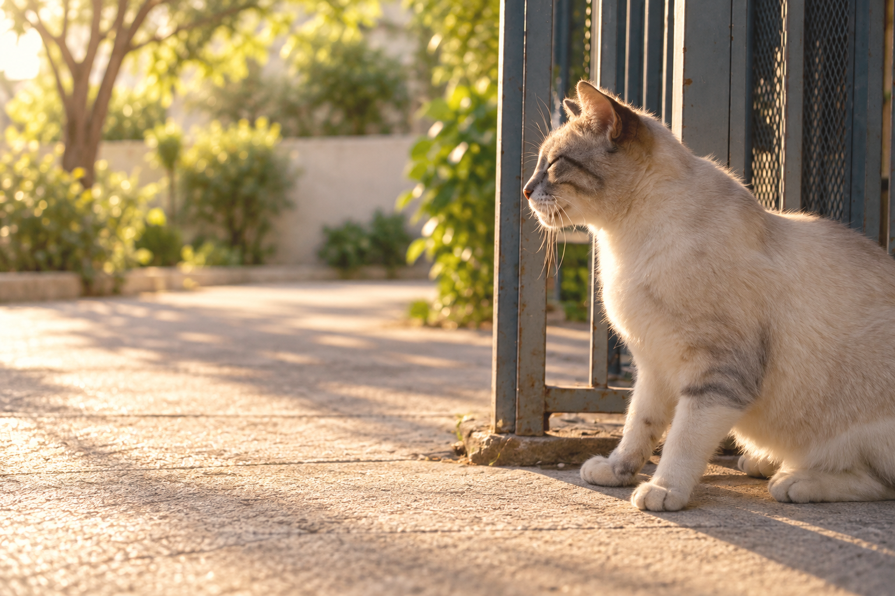
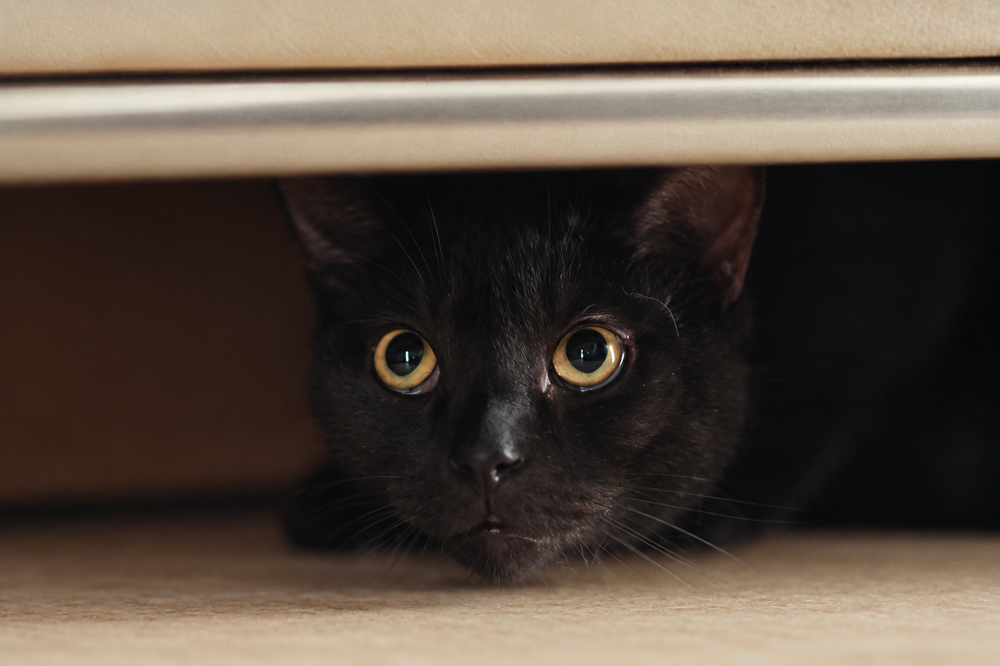

宠语翻译
结合声音与生活情境，发现更多情绪线索。
PET PARTNER · AI FOR EVERYDAY CARE
全能科学养宠智能伙伴。
从健康咨询到营养照顾，让每一份关心更有依据。
01 — A LITTLE HELP, EVERY DAY
从第一声担心，到每一天的安心。
五种能力，让科学养宠触手可及。
拍摄照片 ＋
关注每一次变化，整理观察重点。
健康分析用于辅助日常观察与沟通，不能代替兽医诊断。出现紧急症状时，请及时就医。
LITTLE MOMENTS. REAL CONNECTION.
不止一个可爱的瞬间。
把观察和陪伴，放回真实日常。

探索日常护理与行为知识 ↗

从生活变化，整理观察重点 ↗

看看更适合它的营养方案 ↗

了解它的习惯与行为 ↗

记录日常的细小变化 ↗
读懂互动中的情绪线索 ↗

认识不同的养宠小问题 ↗
生活情境配图，非问诊、诊断或疗效展示。
02 — YOUR PET CARE PARTNER
从一次观察，到一份专属档案。
宠拍档，让你的关心更有条理。
宠拍档，把专业的养宠知识，
变成随时可用的温柔支持。
你的担心，随时有回应
核心能力，照顾每个日常
一宠一档，记住每次变化
让爱多一份依据。
让陪伴少一点猜测。
04 — OUR BELIEF
它的世界很小。
小到，只有你。
好的科技，是让理解更早发生。
宠拍档，用专业接住每一次在意。
ALWAYS A LITTLE CLOSER